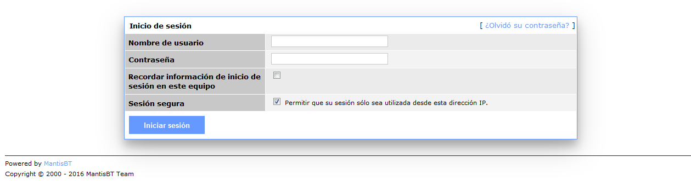

MantisBT-theme
Tema css para MantisBT 1.3.1 basado en el tema por defecto de MantisBT
Uso
Para usar este tema es tan sencillo como seguir los siguientes pasos:
- Descarga el tema a usar (blue.css o custom-color.css)
- Cópialo en la ruta de MantisBT: css/themes
- Cambia la ruta del tema en el fichero config/config_inc.php
$g_css_include_file = "/css/themes/custom-color.css";
Advertencia
En el fichero custom-color.css se usa una característica que no es compatible con todos los navegadores. using css variables. En Internet Explorer 11 NO funciona. Por ese motivo si necesitas que sea compatible con todos los navegadores usa el blue.css.
No me gusta el azul ¿Cómo cambio el color?
Para usar otro color es tan simple como cambiar el valor de la variable definida al principio del archivo custom-color.css, al color que te guste, por ejemplo para ponerlo rojo sería:
:root {
--main-color: #ff0000; /*red. change if you want*/
}
Nota
No soy diseñador, ni desarrollador front-end. Toda mejora es bienvenida. He creado este estilo debido a la escasez de temas que he encontrado para la versión 1.3.1 de MantisBT.
